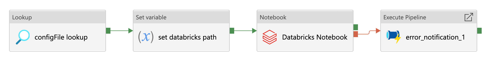
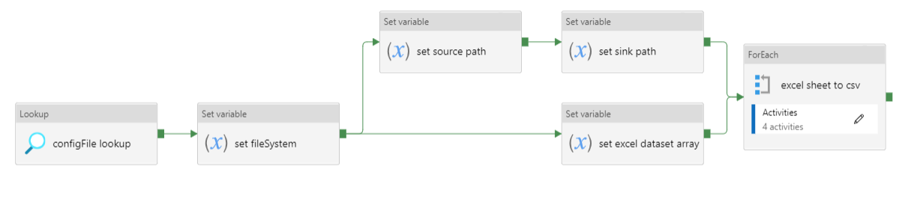
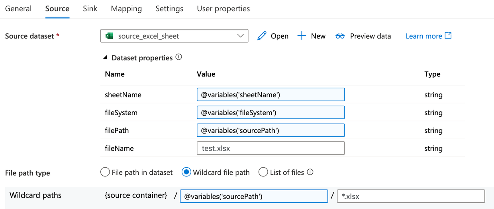
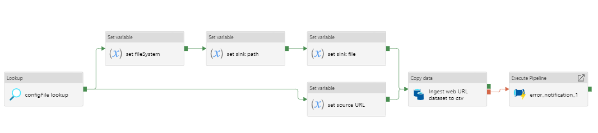
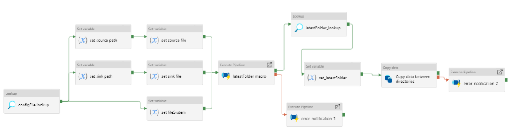
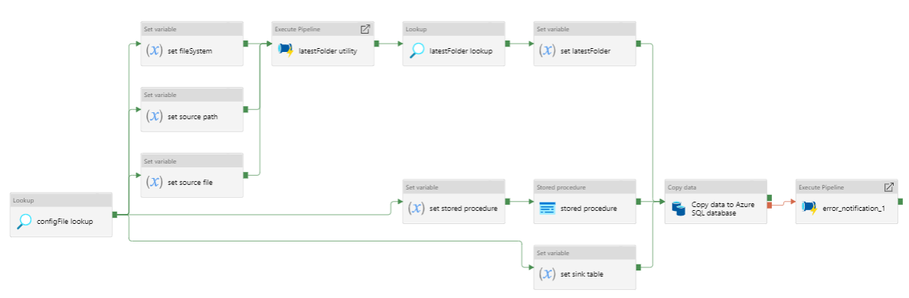
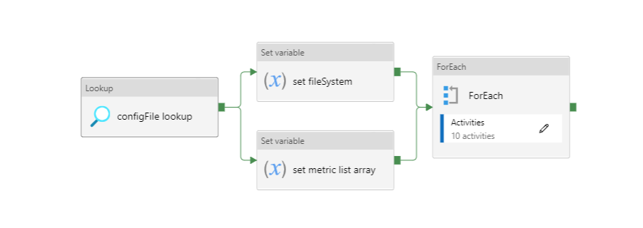
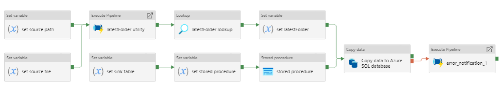

Azure Data Factory Templates
Introduction
Open access and reusable design documentation of pipelines used in the NHSX Analytics Azure Data Factory (ADF) environment.
- SQL Database Ingestion Pipeline
- Databricks Ingestion Pipeline
- Excel Sheet Ingestion Pipeline
- Multiple Excel Sheet Ingestion Pipeline
- Web URL Data Ingestion Pipeline
- Azure Function App Ingestion Pipeline
- SharePoint Ingestion Pipeline
- Databricks Processing Pipeline
- Azure Function App Processing Pipeline
- Multiple Azure Function Apps Processing Pipeline
- Copy File Processing Pipeline
- SQL Table Staging Pipeline
- Multiple SQL Table Staging Pipeline
Originally posted on the NHSX technical gateway website.
SQL Database Ingestion Pipeline
Metadata
- FILE: ingestion_sql.json
- DESCRIPTION: Pipeline to ingest raw data to Azure Datalake blob storage from a SQL database.
- CONTRIBUTORS: Craig Shenton, Mattia Ficarelli
- CONTACT: data@nhsx.nhs.uk
- CREATED: 20 Sept 2021
- VERSION: 0.0.1
Description

Figure 1: Data ingestion from a SQL database
Pipeline to ingest raw data to Azure Datalake blob storage from a SQL database.
- Looks up the
.jsonconfiguration file for this pipeline - Source:
- Sets the source database owner (dbo)
- Sets the source table
- Sets the SQL query
- Sink:
- Sets the file system
- Sets the sink path
- Sets the sink file
- Copy activity copies the data returned from the SQL query as either a
.csvfile or a.parquetfile. - If the copy activity fails, the error notification logic app API will notify the specified email address of the error
Pipeline Configuration
{
"pipeline": {
"name": "ingestion_sql",
"folder": "templates/ingestion/sql",
"adl_file_system": "file_system",
"raw": {
"source_dbo": "dbo",
"source_table": "table_1",
"source_query": "SELECT * FROM dbo.table_1 ORDER BY Date DESC",
"sink_path": "raw/path/to/data",
"sink_file": "table_1.parquet"
}
}Data Factory Configuration
Download the Azure Data Factory json configuration file to use this template in your own data pipelines.
Databricks Ingestion Pipeline
Metadata
- FILE: ingestion_databricks.json
- DESCRIPTION: Pipeline to ingest raw data to Azure Datalake blob storage using a databricks notebook.
- CONTRIBUTORS: Craig Shenton, Mattia Ficarelli
- CONTACT: data@nhsx.nhs.uk
- CREATED: 20 Sept 2021
- VERSION: 0.0.1
Description

Figure 2: Data ingestion using a databricks notebook
Pipeline to ingest raw data to Azure Datalake blob storage using a databricks notebook.
- Lookup the
.jsonconfiguration file for this pipeline. - Set the databricks notebook path.
- Databricks notebook activity runs the databricks notebook specified using an ephemeral job cluster.
- If the databricks notebook activity fails, the error notification logic app API will notify the specified email address of the error.
Within the databricks notebook, using Azure Databricks Functions, data can be saved to blob storage as either a .csv file or a .parquet file.
Pipeline Configuration
Data Factory Configuration
Download the Azure Data Factory .json configuration file to use this template in your own data pipelines.
Excel Sheet Ingestion Pipeline
Metadata
- FILE: ingestion_excel_sheet.json
- DESCRIPTION: Pipeline to ingest a specified excel file sheet, as a .csv file, to Azure Datalake blob storage.
- CONTRIBUTORS: Craig Shenton, Mattia Ficarelli
- CONTACT: data@nhsx.nhs.uk
- CREATED: 20 Sept 2021
- VERSION: 0.0.1
Description

Figure 3: Data ingestion of an excel file sheet
Pipeline to ingest a specified excel file sheet, as a .csv file, to Azure Datalake blob storage.
- Lookup the
.jsonconfiguration file for this pipeline. - Set the Azure Datalake file system.
- Set the source file path, file name, and excel sheet name.
- Set the sink file path and file name.
- Copy activity ingests the excel sheet data to a
.csvfile. - If the copy activity fails, the error notification logic app API will notify the specified email address of the error.
Pipeline Configuration
Data Factory Configuration
Download the Azure Data Factory .json configuration file to use this template in your own data pipelines. excel-sheet-ingestion.json
Note
Alternatively this a variation of this pipeline can be used to ingest multiple excel file sheets to a set of .csv files in Azure Datalake blob storage.
Multiple Excel Sheet Ingestion Pipeline
Metadata
- FILE: ingestion_multiple_excel_sheets.json
- DESCRIPTION: Pipeline to ingest multiple specified excel file sheets as .csv files to Azure Datalake blob storage.
- CONTRIBUTORS: Craig Shenton, Mattia Ficarelli
- CONTACT: data@nhsx.nhs.uk
- CREATED: 20 Sept 2021
- VERSION: 0.0.1
Description

Figure 4: Data ingestion of multiple excel file sheets

Figure 5: ForEach loop activities within pipeline
Pipeline to ingest multiple specified excel file sheets as .csv files to Azure Datalake blob storage.
- Looks up the
.jsonconfiguration file for this pipeline. - Set the Azure Datalake file system.
- Set the source path to the folder containing the excel files.
- Set the sink path.
- Set an
arrayvariable containing the list of excel file metadata. - ForEach loops over each excel - FILE:
- Sets the source sheet and sink file.
- Copy activity ingests the excel sheet data and saves it as a
.csvfile. - If the copy activity fails, the error notification logic app API will notify the specified email address of the error.
Note
Copy activity has ‘File path type’ set to wildcard and the file name regex as *.xlsx (excel) (see Figure 6).

Figure 6: Copy activity wildcard setup
Pipeline Configuration
{
"pipeline": {
"name": "ingestion_multiple_excel_sheets",
"folder": "templates/ingestion/multiple_excel_sheets",
"adl_file_system": "file_system",
"raw": {
"source_path": "ingestion/",
"sink_path": "raw/path/to/data",
"sink_path": "processed/"
"excel":[
{
"sink_file": "table_1.csv",
"source_sheet": "sheet_1"
},
{
"sink_file": "table_2.csv",
"source_sheet": "sheet_2"
},
{
"sink_file": "table_3.csv",
"source_sheet": "sheet_3"
}
]
}Data Factory Configuration
Download the Azure Data Factory .json configuration file to use this template in your own data pipelines.
Web URL Data Ingestion Pipeline
Metadata
- FILE: ingestion_web_url.json
- DESCRIPTION: Pipeline to ingest data from a URL as a .csv file to Azure Datalake blob storage.
- CONTRIBUTORS: Craig Shenton, Mattia Ficarelli
- CONTACT: data@nhsx.nhs.uk
- CREATED: 20 Sept 2021
- VERSION: 0.0.1
Description

Figure 7: Data ingestion from a web URL
Pipeline to ingest data from a web URL as a .csv file to Azure Datalake blob storage.
- Lookup the
.jsonconfiguration file for this pipeline. - Set the source URL.
- Set the file system.
- Set the sink path.
- Set the sink file.
- Copy activity copies the data returned from the URL as a
.csvfile. - If the copy activity fails, the error notification logic app API will notify the specified email address of the error.
Pipeline Configuration
Data Factory Configuration
Download the Azure Data Factory .json configuration file to use this template in your own data pipelines.
Azure Function App Ingestion Pipeline
Metadata
- FILE: ingestion_function_app.json
- DESCRIPTION: Pipeline to ingest raw data to Azure Datalake blob storage using an Azure function app.
- CONTRIBUTORS: Craig Shenton, Mattia Ficarelli
- CONTACT: data@nhsx.nhs.uk
- CREATED: 29 Sept 2021
- VERSION: 0.0.1
Description

Figure 8: Data ingestion using an azure function app
Pipeline to ingest raw data to Azure Datalake blob storage using an Azure function app.
- Lookup the
.jsonconfiguration file for this pipeline. - Set the Azure function app.
- Azure function app activity triggers the specified function app.
- If the Azure function app activity fails, the error notification logic app API will notify the specified email address of the error.
Within the Azure function app data can be saved to blob storage as either a .csv file or a .parquet file.
Pipeline Configuration
Data Factory Configuration
Download the Azure Data Factory .json configuration file to use this template in your own data pipelines.
SharePoint Ingestion Pipeline
Metadata
- FILE: ingestion_sharepoint.json
- DESCRIPTION: Pipeline to ingest a specified folder and files from Microsoft SharePoint to Azure Datalake blob storage.
- CONTRIBUTORS: Craig Shenton, Mattia Ficarelli
- CONTACT: data@nhsx.nhs.uk
- CREATED: 29 Sept 2021
- VERSION: 0.0.1
Description

Figure 9: Data ingestion from microsoft sharepoint
Pipeline to ingest a specified folder from Microsoft SharePoint to Azure Datalake blob storage.
- Lookup the
.jsonconfiguration file for this pipeline. - Set the SharePoint file path and SharePoint logic app URL.
- Call the SharePoint logic app using a webhook that will send back a message once the file transfer is complete.
- If the logic app fails, the error notification logic app API will notify the specified email address of the error.
Pipeline Configuration
Data Factory Configuration
Download the Azure Data Factory .json configuration file to use this template in your own data pipelines.
Databricks Processing Pipeline
Metadata
- FILE: processing_databricks.json
- DESCRIPTION: Pipeline to process data from a folder in Azure Datalake blob storage using a databricks notebook.
- CONTRIBUTORS: Craig Shenton, Mattia Ficarelli
- CONTACT: data@nhsx.nhs.uk
- CREATED: 23 Sept 2021
- VERSION: 0.0.1
Description
Figure 10: Data processing using a Databricks notebook
Pipeline to process data from a folder in Azure Datalake blob storage using a databricks notebook
- Lookup the
.jsonconfiguration file for this pipeline. - Set the databricks notebook path.
- Databricks notebook activity runs the databricks notebook specified using an ephemeral job cluster.
- If the databricks notebook activity fails, the error notification logic app API will notify the specified email address of the error.
Pipeline Configuration
Databricks Orchestration
Note
Alternatively this pipeline can be used to trigger an orchestrator databricks notebook which in turn runs a series of data processing notebooks.
{
"pipeline": {
"name": "processing_databricks",
"folder": "templates/processing/databricks_orchestrator",
"project": {
"databricks_orchestrator_notebook": "/path/to/databricks/orchestrator_notebook"
"databricks":[
{
"sink_path": "path/to/processed/data",
"sink_file": "file_1.csv",
"databricks_notebook": "/path/to/databricks/processing_notebook1"
},
{
"sink_path": "path/to/processed/data",
"sink_file": "file_2.csv",
"databricks_notebook": "/path/to/databricks/processing_notebook2"
},
}
}Python code to sequentially run databricks notebook paths specified in a .json config file from a databricks orchestrator notebook.
Data Factory Configuration
Download the Azure Data Factory .json configuration file to use this template in your own data pipelines.
Azure Function App Processing Pipeline
Metadata
- FILE: processing_function_app.json
- DESCRIPTION: Pipeline to process data to time-stamped folder in Azure Datalake blob storage using an Azure function app.
- CONTRIBUTORS: Craig Shenton, Mattia Ficarelli
- CONTACT: data@nhsx.nhs.uk
- CREATED: 29 Sept 2021
- VERSION: 0.0.1
Description

Figure 11: Data processing using an azure function app
Note
This pipeline is designed to allow for raw data to be ingested and then appended onto an existing table with historical data.
Pipeline to process data to time-stamped folder in Azure Datalake blob storage using an Azure function app.
- Lookup the
.jsonconfiguration file for this pipeline. - Set the source path (of the data to be processed).
- Set the file system.
- Set the Azure function app.
- Use the ‘laterFolder’ utility to find and save the latest folder in the source path.
- If the ‘laterFolder’ utility fails, the error notification logic app API will notify the specified email address of the error.
- Lookup the latest folder.
- Set the latest folder.
- Set the
.jsonbody for the Azure function app. - Run the Azure function app activity.
- If the Azure function app activity fails, the error notification logic app API will notify the specified email address of the error.
Within the Azure function app data can be saved to blob storage as either a .csv file or a .parquet file.
Pipeline Configuration
Data Factory Configuration
Download the Azure Data Factory .json configuration file to use this template in your own data pipelines.
Multiple Azure Function Apps Processing Pipeline
Metadata
- FILE: processing_multiple_function_apps.json
- DESCRIPTION: Pipeline to process data to time-stamped folders in Azure Datalake blob storage using multiple Azure function apps.
- CONTRIBUTORS: Craig Shenton, Mattia Ficarelli
- CONTACT: data@nhsx.nhs.uk
- CREATED: 29 Sept 2021
- VERSION: 0.0.1
Description

Figure 12: Data processing using multiple azure function apps

Figure 13: ForEach loop activities within pipeline
Note
This pipeline allows for multiple different processed data files to be generated from the same data source during a pipeline run by using multiple function apps running sequentially.
Pipeline to process data to time-stamped folder in Azure Datalake blob storage using multiple Azure function apps.
- Lookup the
.jsonconfiguration file for this pipeline. - Set the source path (of the data to be processed).
- Set the file system.
- Set the Azure function app.
- Use the ‘laterFolder’ utility to find and save the latest folder in the source path.
- If the ‘laterFolder’ utility fails, the error notification logic app API will notify the specified email address of the error.
- Lookup the latest folder.
- Set the latest folder.
- Set the
.jsonbody for the Azure function app. - Set an
arrayvariable containing the list of Azure function apps to be run. - ForEach loops over each azure function: >
- Runs the Azure function app activity.
- If the Azure function app activity fails, the error notification logic app API will notify the specified email address of the error.
Within the Azure function app data can be saved to blob storage as either a .csv file or a .parquet file.
Pipeline Configuration
{
"pipeline": {
"name": "processing_function_app",
"folder": "templates/processing/function_app",
"adl_file_system": "file_system",
"project": {
"functions": [
{"func_name": "azure_func_app_1"},
{"func_name": "azure_func_app_2"},
{"func_name": "azure_func_app_3"}
],
"source_path": "raw/historical/data/source"
}
}Data Factory Configuration
Download the Azure Data Factory .json configuration file to use this template in your own data pipelines.
Copy File Processing Pipeline
Metadata
FILE: processing_csv_file.json
DESCRIPTION: Pipeline to copy a .csv file in a time-stamped folder between directories in Azure Datalake blob storage.
CONTRIBUTORS: Craig Shenton, Mattia Ficarelli
CONTACT: data@nhsx.nhs.uk
CREATED: 29 Sept 2021
VERSION: 0.0.1
Description

Figure 14: Copying a .csv file between Azure Datalake directories
Pipeline to copy a .csv file in a time-stamped folder between directories in Azure Datalake blob storage.
- Lookup the
.jsonconfiguration file for this pipeline. - Set the Azure Datalake file system
- Set the source path and source file name.
- Set the sink path and sink file name.
- Use the ‘laterFolder’ utility to find and save the latest folder in the source path.
- If the ‘laterFolder’ utility fails, the error notification logic app API will notify the specified email address of the error.
- Lookup the latest folder.
- Set the latest folder.
- Copy activity copies the
.csvfile between the Datalake directories. - If the copy activity fails, the error notification logic app API will notify the specified email address of the error.
Pipeline Configuration
Data Factory Configuration
Download the Azure Data Factory .json configuration file to use this template in your own data pipelines.
SQL Table Staging Pipeline
Metadata
- FILE: staging_sql_database.json
- DESCRIPTION: Pipeline to stage data from a time-stamped folder in Azure Datalake blob storage to a table in an Azure SQL database.
- CONTRIBUTORS: Craig Shenton, Mattia Ficarelli
- CONTACT: data@nhsx.nhs.uk
- CREATED: 29 Sept 2021
- VERSION: 0.0.1
Description

Figure 15: Data staging to a table in an Azure SQL database
Pipeline to stage data (.csv file) from a time-stamped folder in Azure Datalake blob storage to a table in an Azure SQL database.
- Lookup the
.jsonconfiguration file for this pipeline. - Set the source path (of data to be staged).
- Set the source file.
- Set the file system.
- Set the sink table (target table in the SQL database).
- Set the stored procedure (truncates data in the target table in the SQL database).
- Run the stored procedure activity. The stored procedure also sets the data type of each column in the database table.
- Use the ‘laterFolder’ utility to find and save the latest folder in the source path.
- If the ‘laterFolder’ utility fails, the error notification logic app API will notify the specified email address of the error.
- Lookup the latest folder.
- Set the latest folder.
- Run the copy activity which stages data from a
.csvfile in Azure Datalake blob storage to an empty table in an Azure SQL database. - If the Azure copy activity fails, the error notification logic app API will notify the specified email address of the error.
Pipeline Configuration
{
"pipeline": {
"name": "staging_sql_database",
"folder": "templates/staging/sql_database",
"adl_file_system": "file_system",
"staging": {
"stored_procedure":"[dbo].[sql_stored_procedure_table_1]",
"source_path":"proc/projects/path/to/processed/data/",
"source_file":"table_1.csv",
"sink_table":"sql_table_1"
}
}Data Factory Configuration
Download the Azure Data Factory .json configuration file to use this template in your own data pipelines.
Multiple SQL Table Staging Pipeline
Metadata
- FILE: multiple_tables_staging_sql_database.json
- DESCRIPTION: Pipeline to stage data from a time-stamped folders in Azure Datalake blob storage to multiple tables in an Azure SQL database.
- CONTRIBUTORS: Craig Shenton, Mattia Ficarelli
- CONTACT: data@nhsx.nhs.uk
- CREATED: 29 Sept 2021
- VERSION: 0.0.1
Description

Figure 16: Data staging to multiple tables in an Azure SQL database

Figure 17: ForEach loop activities within pipeline
Pipeline to stage data (.csv files) from a time-stamped folders in Azure Datalake blob storage to multiple tables in an Azure SQL database.
- Lookup the
.jsonconfiguration file for this pipeline. - Set the file system.
- Set an
arrayvariable containing the list of stored procedures and tables to which processed data is to be staged. - For each element in the list the ForEach loop:
- Sets the source path (of data to be staged).
- Sets the source file.
- Uses the ‘laterFolder’ utility to find and save the latest folder in the source path.
- Lookups the latest folder.
- Sets the latest folder.
- Sets the sink table (target table in the SQL database).
- Sets the stored procedure (truncates data in the target table in the SQL database).
- Runs the stored procedure activity. The stored procedure also sets the data type of each column in the database table.
- Runs the copy activity which stages data from a
.csvfile in azure Datalake blob storage to an empty table in an Azure SQL database. - If the Azure copy activity fails, the error notification logic app API will notify the specified email address of the error.
Pipeline Configuration
{
"pipeline": {
"name": "multiple_tables_staging_sql_database",
"folder": "templates/staging/multiple_tables_sql_database",
"adl_file_system": "file_system",
"staging": [
{
"stored_procedure":"[dbo].[sql_stored_procedure_table_1]",
"source_path":"proc/projects/path/to/processed/data/",
"source_file":"table_1.csv",
"sink_table":"sql_table_1"
},
{
"stored_procedure":"[dbo].[sql_stored_procedure_table_2]",
"source_path":"proc/projects/path/to/processed/data2/",
"source_file":"table_2.csv",
"sink_table":"sql_table_2"
},
{
"stored_procedure":"[dbo].[sql_stored_procedure_table_3]",
"source_path":"proc/projects/path/to/processed/data3/",
"source_file":"table_3.csv",
"sink_table":"sql_table_3"
}
]
}Data Factory Configuration
Download the Azure Data Factory .json configuration file to use this template in your own data pipelines.
Reuse
Citation
@online{shenton2021,
author = {Craig Shenton},
title = {Azure {Data} {Factory} {Templates}},
date = {2021-09-09},
url = {https://craig-shenton.github.io/craigrshenton/azure-data-factory-templates.html},
langid = {en}
}